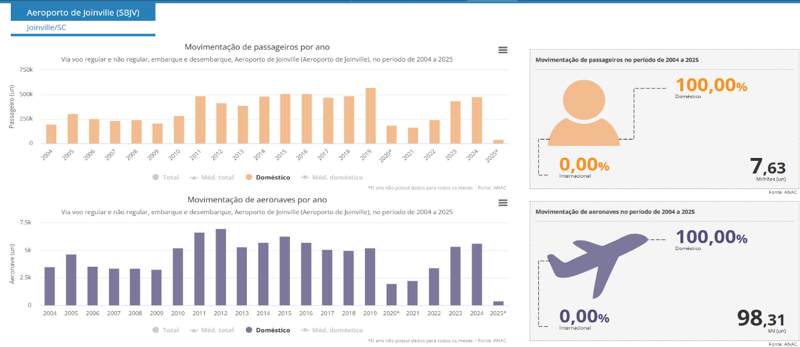
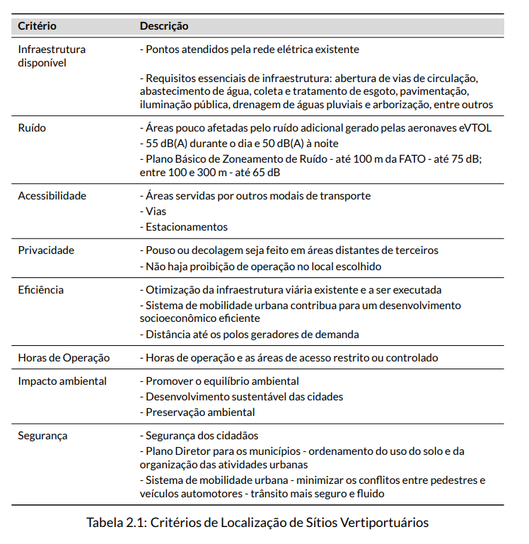

1. Cidade escolhida: Joinville-SC¶
2. Critérios de Escolha¶

Figura 1: Índice de Cidades Empreendedoras ENAP, 2023[1].
- Inovação;
- Porte do município;
3. Dados da Cidade¶

Figura 2: Referências de Joinville, 2023[1] e 2024[2].
4. Destaques dos Dados¶
4.1 Cultura de Inovação¶

Figura 3: Centros de Inovação, SCTI[3].
- Centros de Inovação;
- Starups (modelos de negócio);
- Aceitação social.
4.2 Aspectos Demográficos, Socioeconômicos e Culturais¶
Cidade estratégica localizada no norte de Santa Catarina, destacando-se como um importante polo industrial e econômico do estado. Conhecida como a "Cidade das Flores" devido à sua rica flora, Joinville é um dos principais centros industriais do Brasil, com forte presemça nos setores metalúrgico, têxtil e de tecnologia.
Sua localização próxima à cidade de Curitiba (capital estadual) e ao litoral catarinense (polo turístico), aliada à diversidade de setores econômicos, faz de Joinville uma cidade vibrante, com forte crescimento e grande influência na economia regional e nacional.
Destaques da Cidade
- Infraestrutura moderna e bem desenvolvida;
- Alto índice de qualidade de vida;
- Centro industrial e logístico de grande relevância;
- Cultura rica.
Dados Gerais
- Área Territorial: 1.127,947 km² (IBGE)
- População (IBGE 2022): 616.317 habitantes
- Densidade demográfica: 546,41 hab/km²
- PIB per capta: R$ 74.532,00
- Renda média: R$ 3.488,14

Figura 4: Divisão Territorial, SIMGeo [4].

Figura 5: Remuneração Média Mensal, RAIS[5].

Figura 6: Salário Médio Mensal, IBGE[6].
4.3 Transporte Multimodal¶
Rodoviário

Figura 7: Principais Acessos a Joinville, SEPUR[2].

Figura 8: Veículos em Circulação em Joinville, DETRAN[2].

Figura 9: Número de viagens por modal de transporte, DETRAN[2].
Aéreo - Aeroporto Lauro Carneiro de Loyola

Figura 10: Índice de Cidades Empreendedoras ENAP, 2023[7].
Aproximadamente 5 mil movimentos de aeronaves anuais. UAM como gerador de demanda (elavação de movimento) de aeronaves. Concessionária como stakeholder e possível parceira.
Portuário
5 portos distando a menos de 125Km:
-
Porto de Navegantes - distância: 88 km
-
Porto de Itajaí - distância: 93 km
-
Porto de Itapoá - distância: 79 km
-
Porto de São Francisco do Sul - distância: 61 km
-
Porto de Paranaguá - distância: 125 km
Por bicicleta
Figura 11: Rede cicloviária de Joinville, SEPUR[2].
Extensa malha de ciclovias.
Ferroviário
A ferrovia que passa pelo limite municipal de Joinville liga a região do porto em São Francisco do Sul à cidade de Mafra. Nesta cidade há conexão ferroviária à malha nacional para Porto Alegre, São Paulo e todo Paraná. A carga transportada inclui farelo de soja, trigo, sucata, cerâmica e bentonita, soja, óleo degomado, sorgo, aveia, milho, fertilizantes, minério de ferro, bobina de aço, ferro gusa e refrigeradores. É necessário aprofundar informações para compreender as associações com o UAM.
4.4 Capacidade de Distribuição Elétrica¶

Figura 12: Linhas de Transmissão Elétrica, Celesc[2].
- Distribuição estável, com baixo índice de interrupção;
- Investimento para expansão da distribuição de matriz fotovoltaica.
5. Alinhamento UAM¶
Identificar possíveis aplicações UAM em Joinville, segundo a literatura disponível.

Figura 13: Modalidades de serviços de transporte aéreo, UAM[8].

Figura 14: Parâmetros técnicos, UAM[8].

Figura 15: Diferentes demandas do UAM, Oi Long[9].
5.1 Casos de uso e subdivisão de operações¶
Para a realidade de Joinville, em função da configuração espacial, os casos de uso podem ser aglutinados em 3 categorias, se subdividindo em 14 possíveis aplicações/oportunidades.
Figura 16: Casos de uso para 30 km

Figura 17: Casos de uso para 50-70 km

Figura 18: Casos de uso para 100 km
5.2 Modelo lógico de tomada de decisão¶
Premissa “Possível, Viável, Desejável” da inovação, adaptada para o problema: criar infraestrutura UAM.
Possível: é falar de viabilidade técnica do projeto em curto prazo, ou seja, considerarmos se é tecnologicamente possível realizar o que está sendo proposto, analisando neste ponto se será possível atender os objetivos de desempenho esperados pela empresa.
Viável: se refere ao retorno esperado de uma solução. De nada adianta ter uma ideia revolucionária se ela não é viável financeiramente. Esta análise de viabilidade permite a captação de investimentos, a definição do mercado, o estudo dos riscos e alternativas e reduz chances de erros e impactos negativos. Esse processo otimiza o uso dos recursos, melhora resultados e maximiza o retorno, proporcionando segurança e estabilidade.
Desejável: o foco são as pessoas, já que elas serão beneficiadas pela inovação desenvolvida e aqui vemos que inovação não é apenas sinônimo de tecnologia de ponta, mas resulta do valor que o cliente percebe. Para isso, a pesquisa de mercado, o mapa de empatia e as entrevistas e testes com clientes são fundamentais tornando possível se colocar no lugar do cliente e realmente entender suas necessidades reais.

Figura 19: 3 Círculos da Inovação
A adaptação se dá no ponto de que normalmente na inovação é normal que a
avaliação do “desejo” acontece antes das demais, pois o desenvolvimento de uma
solução está baseado na dor do usuário. Conceito “cabelo pegando fogo”.
5.3 Análise em primeira instância: possibilidade técnica e escolha de sítios¶
Após o consenso do grupo sobre as aplicações/oportunidades UAM mais amoldadas à realidade de Joinville (Airport Shuttle; Air Taxi; Air Taxi Intercidades; Evacuação Médica; Turístico), com a finalidade de filtrar os dados mais relevantes para a análise dentro dos critérios estabelecidos, foi aplicado o método Analytic Hierarchy Process - AHP para realizar a priorização dos critérios.

Figura 20: Critérios de Localização de Sítios Vertiportuários
Análises individuais dos critérios:
Figura 21: Aplicação individual do método AHP.
A figura abaixo resume a análise e a tomada de decisão até o momento:
O ideal seria aplicar a lógica em todas as aplicações/oportunidades UAM em Joinville, a fim de identificar quais seriam mais viáveis e poderiam compor um único empreendimento.

Figura 22: Amplitude ideal da avaliação dos critérios de escolha (elaboração própria)
A figura abaixo resume a análise e a tomada de decisão até o momento:

Exemplos dos dados relevantes para a escolha dos sítios:

Figura 23: Dados de aeródromos e helipontos

Figura 24: Integração com o modal rodoviário (terminais)

Figura 25: Integração com o modal rodoviário (malha viária)

Figura 26: Distribuição de Rede de Alta tensão

Figura 27: Distâncias de centros urbanos relevantes